King of the Court
King of the Court is a continuous-play session format. One team defends the court while challengers queue up to take them on. When the defenders lose, they leave — the challengers become the new court holders and the next team from the queue steps up. Points accumulate across the session, and the player with the most points when time runs out is the King. A configurable strike system prevents any team from dominating too long: once a team reaches the strike limit they are automatically ejected and rejoin the queue.
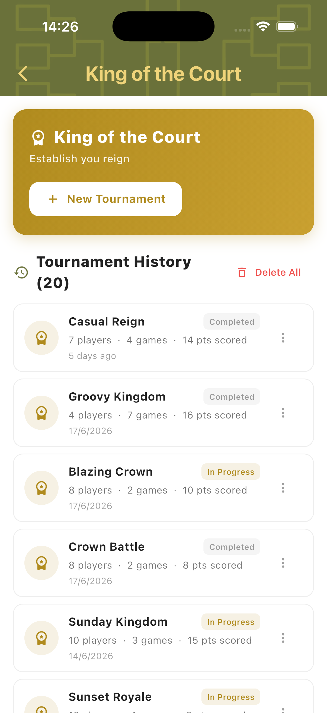
Best for
- Informal group sessions where continuous action is the priority
- Mixed-ability groups — challengers rotate in regardless of result
- Sessions where one organiser manages the flow from a single device
Tournament Setup
Tap New Tournament to configure the session. Set the number of players, total session time, match style, assignment mode, courts, and the strike points limit. Add players, name the tournament, and tap Create Tournament to begin.
Session Settings
Configure players, total session time, match style (2v2), assignment mode, number of courts, and the Strike Points threshold. Strike Points set when a defending team is automatically ejected — for example, a limit of 5 means a team is sent back to the queue once they reach 5 points. Set to 0 to disable ejections.
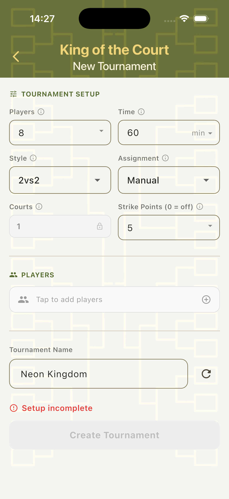
Assignment Modes
Manual — the organiser picks the next two challengers from a player pool after each game. Automated — TournaQ automatically selects challengers and shows a preview of who is up next, with a Re-roll option. Auto-Allplay — automated assignment designed to ensure every player gets equal court time across the session.
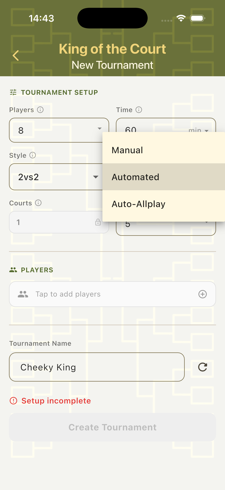
Add Players
Tap the Players field to open the player panel. Create players on the spot, import from the Players Hub, or use a random fill option. All added players enter the rotation from the start of the session.
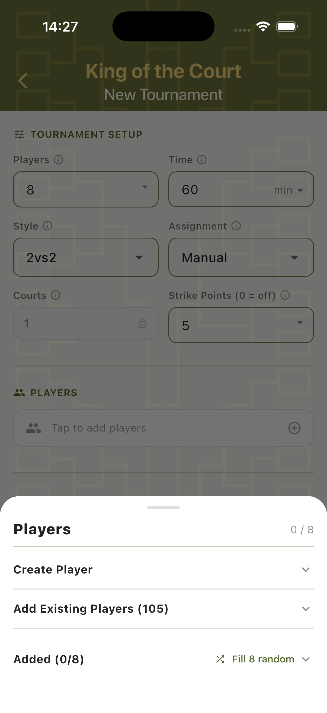
Scorecard
The King of the Court scorecard uses a session timer that counts down the total event time — not individual game timers. The current game, challenger queue, and all match controls are visible from one screen throughout the session.
Automated Mode
In Automated mode, the scorecard shows the session timer at the top, the Up Next row with the next challengers (and a Re-roll button to shuffle), and the current Challengers waiting on deck. The defending team's card shows their score, time on court, and running strike count. The Team Ejected button appears on the right side of the card throughout the game.
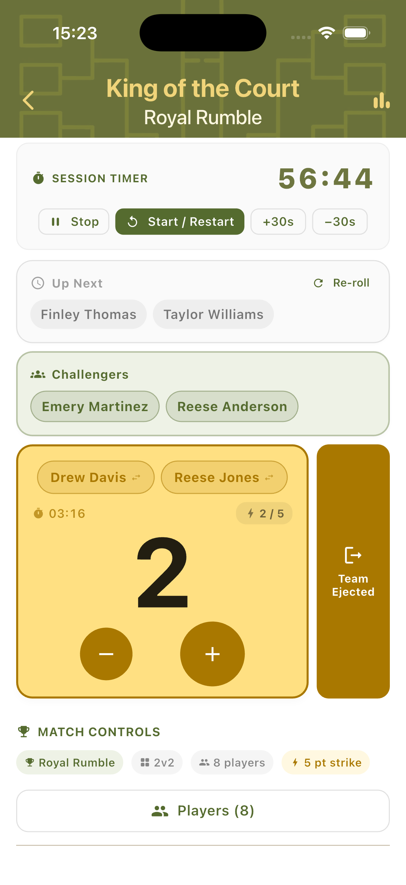
Auto-Allplay Mode
Auto-Allplay uses the same layout. An admin indicator at the bottom shows who is managing the session. The Up Next and Challengers rows ensure fair rotation. All team cards display the current strike progress. The Team Ejected button is always available for manual override if the organiser needs to intervene.
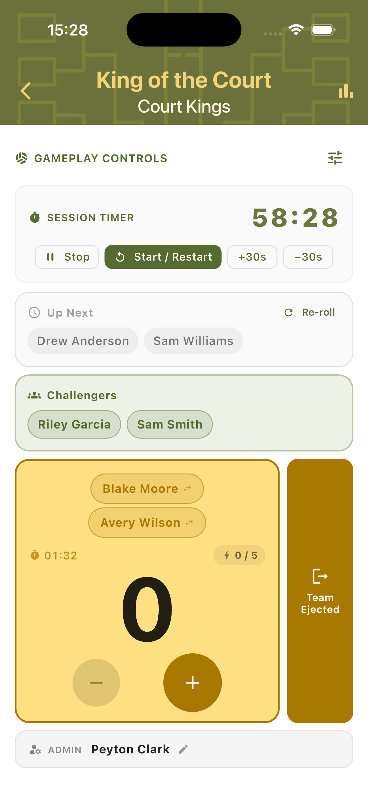
Manual Queue
In Manual mode, the organiser selects the next two challengers after each game. All waiting players are shown as tappable chips — select two to form the next team, then start the game.
Defending the Court
The defending team's card shows their names, current score, time on court, and strike counter (e.g. 3/5). Match Controls below show tournament context chips. Complete Tournament and Save and Return buttons are always visible so the organiser can end the session at any point.
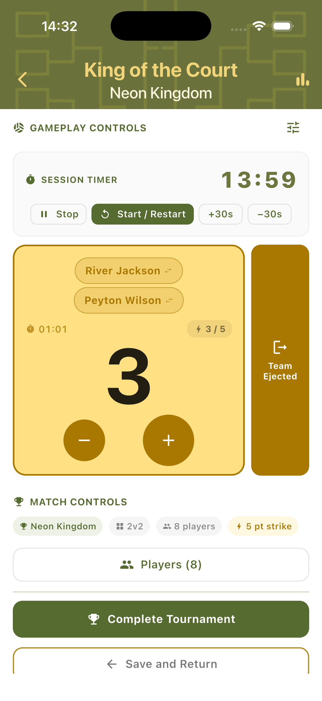
Select Next Challengers
After a game ends in Manual mode, all available players appear as chip buttons. Tap two to form the next challenging team — Start Game activates once both slots are filled. An Undo Last Ejection button allows correcting mistakes without navigating away.
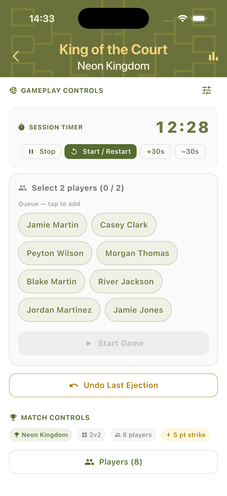
Game Events
When a defending team hits the strike limit the app triggers ejection automatically. They return to the queue, the challengers take the court, and the session continues without interruption. The landscape view is available throughout for easier table-side or net-post scoring.
Strike Limit Reached
When the defending team accumulates enough points to hit the strike threshold, a Game Won dialog confirms the result. It names the team, the points total reached, and explains they will be ejected and return to the queue. Tap Eject Team to confirm — the challengers automatically become the new court holders.
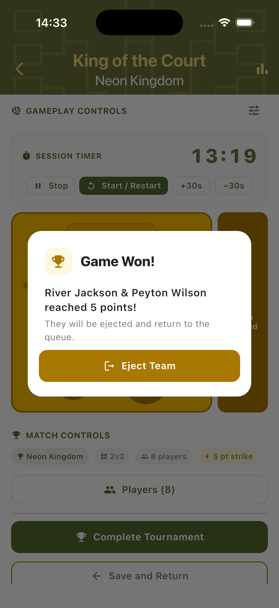
Landscape Scoring
Rotate the device to switch to landscape mode. The session timer and controls appear on the left, with team scoring on the right. Useful when the phone is placed on a table or net post where portrait orientation is less practical.
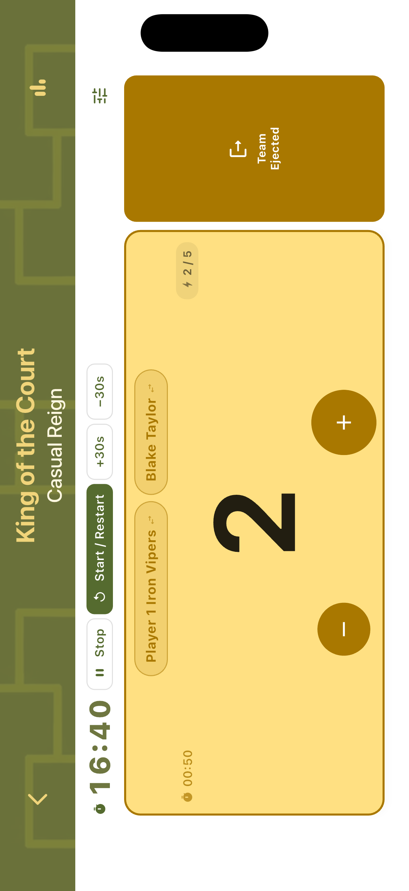
Player Stats & Rankings
Player stats are tracked across the whole session. Games played, wins, and total points accumulate continuously. Stats can be viewed live at any point and the final standings are shown when the session ends.
Final Player Stats
At the end of the session, the Player Stats panel shows the complete standings: each player ranked by total points scored, with their game count and win count. The session leader is highlighted at the top in gold. Stats reflect the full session including all ejections and queue rotations.
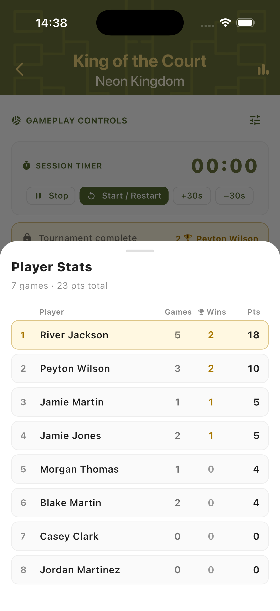
Live Rankings
Tap the rankings icon at any point during the session to see a live leaderboard. Players are ordered by wins and cumulative score so far. Rankings update after every completed game, giving everyone a real-time view of who is leading before time runs out.
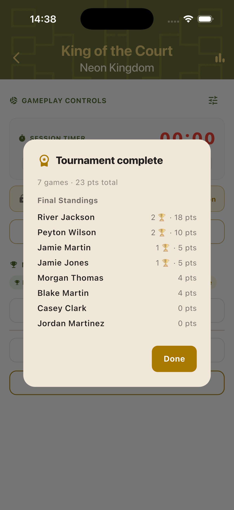
Step-by-Step Workflow
- Open TournaQ and navigate to King of the Court.
- Tap New Tournament and configure players, time, match style, assignment mode, courts, and strike points.
- Add players and name the tournament, then tap Create Tournament.
- Start the session timer. The first game begins with the initial court holders.
- Use the + and − buttons to track the defending team's score.
- In Manual mode: select two challengers after each game. In Automated / Auto-Allplay: challengers are assigned automatically — re-roll if needed.
- When a team hits the strike limit, tap Eject Team to rotate them out.
- Continue until the session timer reaches zero.
- Tap Complete Tournament to finalise the session and review the final Player Stats.
Have a question about King of the Court, spotted something missing, or want to suggest an improvement?